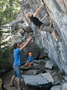
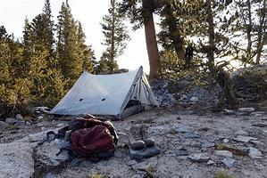
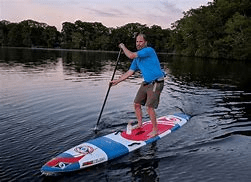
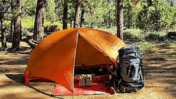
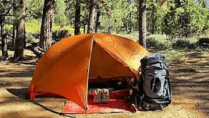

Adventure Trip Experiences
OREC offers numerous ways of experiencing nature through our Adventure Trips being rock experiences, land experiences, and water experiences.
Rock Experiences
OREC gives students the opportunity to enjoy the sport of rock climbing outdoors, which few often do. There are two forms of rock climbing that OREC brings students outdoors: bouldering and top rope.

Land Experiences
OREC gives students the choice of one day hiking trips to scenic areas
around the state and the harder challenge of spending multiple days outdoors backpacking along the trail.

Water Experiences
OREC has the capability to give students relaxing, or challenging water experiences. Whether your style is paddleboarding on a calm lake or surfing on the beach we have the right thing for you.

 
